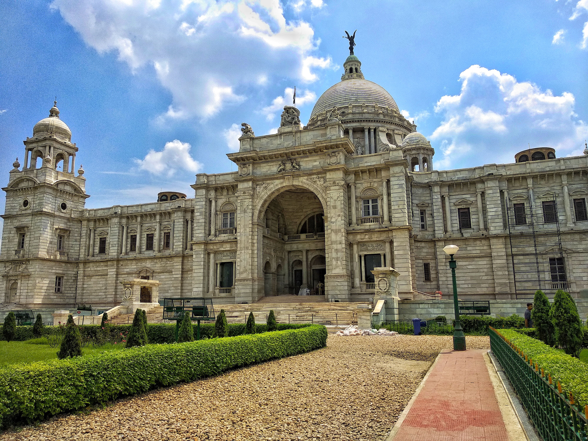

VICTORIA MEMORIAL
The Victoria Memorial Hall is one of the most magnificent monuments of not only the city of Calcutta but of our entire country. Representing the resplendent and majestic British architecture, Victoria Memorial Hall stands today, as a veritable icon of the city of Kolkata. Located on 1 Queen’s way, the VMH was envisaged by Lord Curzon, the Viceroy of British India, as a memorial to the deceased Queen Victoria. Hence, according to Curzon this memorial should take form of a great marble hall, which was to be erected on the Calcutta maidan to serve primarily as a monument to the Queen and secondarily as a national gallery and Valhalla of the Indian Empire.
The national gallery which Curzon speaks about would in future take the shape of a museum. The Victoria Memorial hall was therefore set up to function more than just a memorial for the deceased Queen Victoria. The memorial was to be designed with a museum housed within its realms. The memorial with the museum would act as a “standing record of our wonderful history” This was to be a historical museum where people could see before them pictures and statues of men who played a prominent part in the history of this country and develop a pride in their past. Curzon’s writing bring forth that it was a part of his imperial duty to put into execution to set up a “Great Imperial memorial worthy of Queen Victoria and worthy of India.
Within few weeks after Queen’ death in January 1901 a great meeting was convened in the Town Hall of Calcutta on 6th February, 1901, whereby a resolution for constituting an all Indian Memorial Fund for building of the memorial was moved. The princes and people of India responded Architects generously to his appeal for funds and the total cost of construction of this monument amounting to one crore, five lakhs of rupees, was entirely derived from their voluntary subscriptions. King George V, the then Prince of Wales, laid the foundation stone on January 4, 1906 and it was formally opened to the public in 1921.